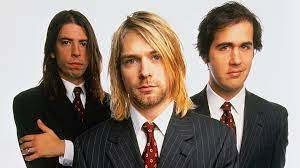
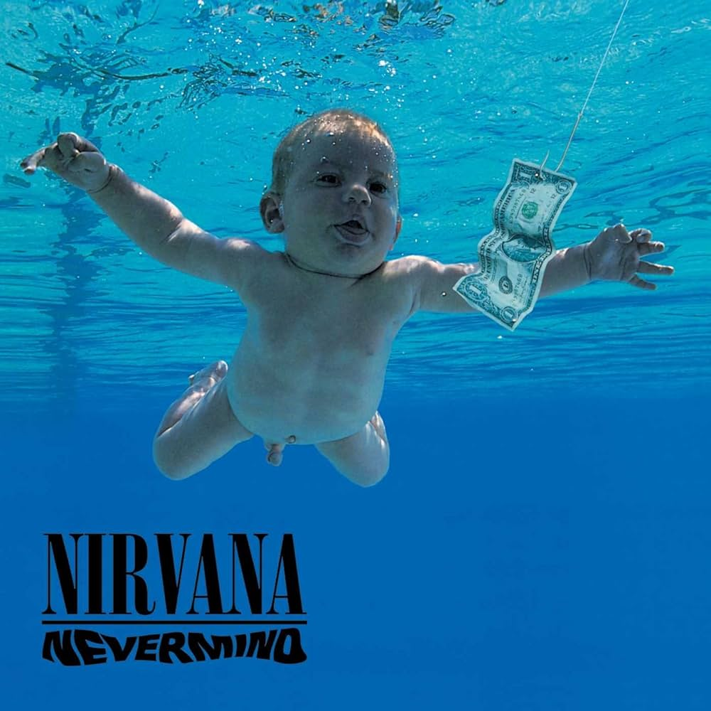

LA MEJOR BANDA QUE EXISTE!!
Nirvana fue una banda de rock estadounidense formada en Aberdeen (Washington), en 1987.
Fundada por el cantante y guitarrista Kurt Cobain y el bajista Krist Novoselic, la banda pasó por una sucesión de bateristas,
sobre todo Chad Channing, y luego reclutó a Dave Grohl en 1990. El éxito de la banda popularizó el rock alternativo y, a menudo,
se los mencionaba como la banda de proa de la Generación X. Su música mantiene un
seguimiento popular y continúa influyendo en la cultura del rock moderno.

Mejor albúm favorito
Para mi es Nevermind
